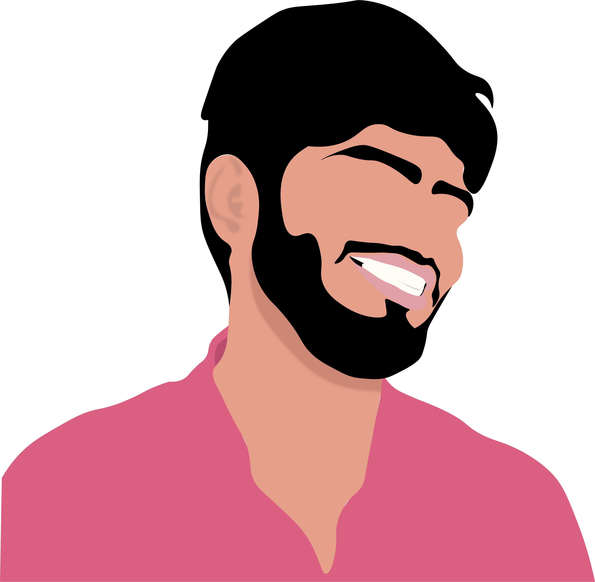
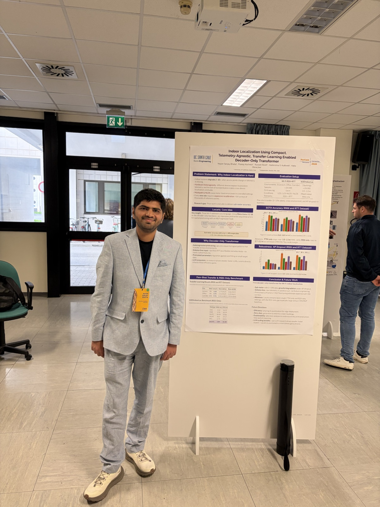
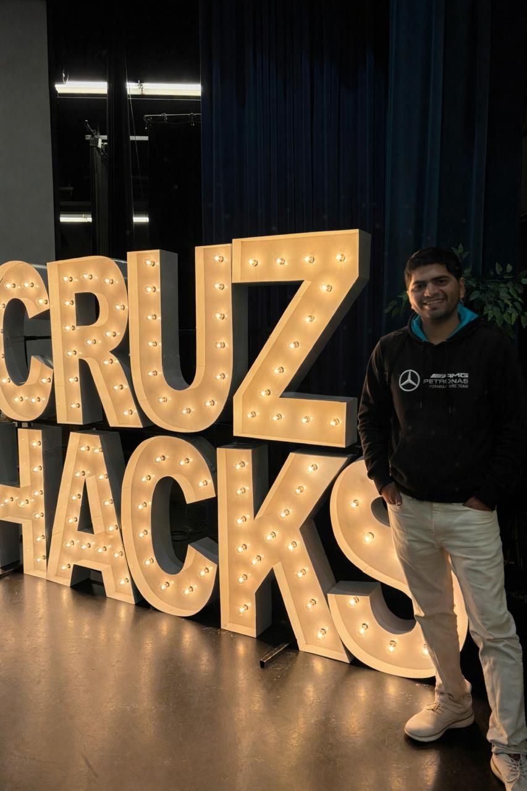

About Me

I am a Computer Science & Engineering PhD candidate at UC Santa Cruz, advised by Prof. Katia Obraczka in the Inter-Networking Research Group (i-NRG). My work turns commodity wireless telemetry into practical sensing systems, from LLM-based indoor localization to contactless vital-sign monitoring.
I maintain the University of California's Essential Needs web app ecosystem, including the UC Essential Needs Directory and UC Essential Needs Navigator. I built the directory and AI-powered Navigator with campus partners, from backend services to deployment. The platform serves a UC system that enrolled 301,093 students in fall 2025.

Contactless heart-rate monitoring from low-cost WiFi devices.

WiP paper presented at IEEE PerCom 2026.

Public launch story for the UC-wide directory and AI Navigator.

Selected for QB3-UCSC GSR support for PulseFi commercialization.

Winning project media from Mastek Project Deep Blue Season 5.

Project judging and student hackathon mentorship.
Research & Projects
- WiFiGPT → Locaris / WiFi telemetry localization (2025–Present). WiFiGPT: GPT-based indoor localization from heterogeneous WiFi telemetry, including CSI, RSSI, and FTM. Locaris: Compact decoder-only LLM that treats each AP measurement as a token and ingests raw WiFi telemetry without preprocessing. Result: Sub-meter RSSI/FTM localization, centimeter-level CSI results in WiFiGPT, and few-shot Locaris adaptation to unseen devices and deployments. IP: WiFiGPT technology disclosure listed as Tech ID 34231 / UC Case 2026-577-0; WiFiGPT provisional patent filed. WiFiGPT arXiv · Locaris arXiv · PerCom 2026 WiP announcement · UC Tech Transfer
- Pulse-Fi (2024–Present). Focus: Low-cost, contactless WiFi CSI sensing for heart-rate, breathing-rate, and apnea monitoring. Publication: Peer-reviewed DCOSS-IoT paper plus extended cardiopulmonary arXiv version; IEEE Xplore listed 3,161 full-text views as of May 20, 2026. IP: Utility provisional patent application filed under 35 USC 111(b). IEEE DOI · paper PDF · extended arXiv · UCSC News · EurekAlert · Edge AI presentation · press compilation Pulse-Fi coverage spans 100+ public articles, videos, reposts, and discussions, including: Live Science, CNET, Tom's Hardware, IEEE Spectrum, Medical Xpress, News-Medical, Healthcare in Europe, Interesting Engineering, Hackster.io, ZDNet, XDA Developers, Hackaday, KSBW TV, and Hacker News discussion.
- UC Essential Needs Directory & Navigator (2021–Present). Focus: UC-wide web app for food, housing, health, transportation, legal, and financial-aid support. Build: AI-powered Navigator and complete technical system with UC Essential Needs Consortium, CEJA, and UCSC partners. CEJA Navigator page · UCSC launch story · UC enrollment record
- Network Simulation Bridge (NSB). Focus: Open-source co-simulation bridge between front-end apps and OMNeT++ / ns-3 network simulators. Evidence: ACM Q2SWinet 2023 paper, IEEE ICDCS 2025 tutorial, and NSF POSE Award 2449377. ACM DOI · GitHub · ICDCS tutorial · NSF award

Experience
- ML/AI Intern, Zscaler (Summer 2026, incoming).
- LLM & Platform Engineer, UC Santa Cruz (Oct 2021–Present). Built and deployed the UC Essential Needs Directory and Navigator with student, staff, and faculty partners. UCSC launch story.
- Graduate Researcher, i-NRG Lab (Sep 2021–Present). WiFi sensing, indoor localization, edge ML, and network co-simulation on commodity hardware.
- Teaching Assistant, UCSC (Jan 2022–Jun 2024). ASTR 119, CSE 130, CSE 13S, CSE 30, CSE 20.
Mentoring
I currently mentor Raksshana Harish Babu (undergraduate, UCSC) on WiFi sensing research. I also mentor Makela Shen (Saratoga High School). Previously mentored Russell Elliott (M.S., UCSC), now a co-author on Locaris.
Since 2024 I have mentored high-school researchers through the UCSC Science Internship Program (SIP).
- SIP 2025 — CSE-07: Enhancing Wi-Fi Sensing Using Machine Learning Models with the 802.11 protocol. Mentor for Ruoyi (Gloria) Tang, William Boyd Nzive, Vir Choudhary, Yuhan (Amy) Li, and Dhriti Agarwal. Yuhan (Amy) Li is continuing on a potential new WiFi sensing project. Slides.
- SIP 2024 — CSE-15: Enhancing Indoor Localization Using Machine Learning Models with the 802.11 Protocol. Mentor for Pranay Kocheta, Axel Edin, Rafael Castro, and Ella Li. Pranay Kocheta is actively working on Pulse-Fi, Locaris, and future WiFi sensing research. Slides · Project video.
Awards, Service & Recognition
- QB3-UCSC Graduate Fellowship for Innovators, 2026 (PulseFi). Selected as one of a few UCSC graduate students receiving GSR support for research poised for commercialization (program page).
- Biodiversity Seed Award ($2,500, 2021–22) and Agroecology Award ($3,000, 2022–23) — UC Basic Needs.
- UC Basic Needs honorarium ($5,000, 2023) and UC Essential Needs Directory & Navigator fellowship ($7,500, 2025).
- CITRIS Smart Health Masterclass & Intensive (2025). Nominated for a selective 5-day program at UC Berkeley on responsible AI in healthcare and healthtech innovation.
- Certificate of Recognition, UC Basic Needs & Economic Justice Center, 2024 and 2025.
- Invited presenter, UC Basic Needs convenings (2022–2026): CHEBNA 2026, CHEBNA 2024, UC GPC Summit 2024 at UCLA, and UC Basic Needs Convening at UC Irvine.
- TPC Member, IEEE LCN 2026; Reviewer: IEEE TMC (2025), ACM TOMPECS (2026).
- Invited talk: Edge AI and Vision Alliance on non-contact vital-sign monitoring with low-cost WiFi devices.
- Young Gladiators / Colosseum Master Class (DARPA/NSF): LinkedIn post · program page.
- Project judge, CruzHacks 2026 (LinkedIn post).
{kind=link}
{kind=link}
Technical Skills
- Programming: Python, SQL, C/C++, Java, Scala, Solidity
- ML/AI: PyTorch, TensorFlow, Keras, scikit-learn, NumPy/Pandas, Matplotlib
- Web: Node.js, React, Express, GraphQL, Flask, Django, HTML/CSS/JS
- Data/Infra: MySQL, MongoDB, CUDA, Docker, Kubernetes, Nginx, GitHub Actions, CI/CD, AWS, GCP
- MLOps/Automation: Jenkins, Ansible, Pytest, PyTorch Lightning, Selenium, SLURM
Earlier — Hackathons, Competitions & Leadership
- Winner, Mastek Project Deep Blue Season 5 (2019–2020). Team leader. Winning video · Project video.
- Crop Yield Estimation (NDVI + OpenCV). Calculated plant health from drone imagery using the Normalized Difference Vegetation Index and OpenCV. Video on my YouTube channel.
- Winner, Smart India Hackathon 2019 (Software Edition). Backend developer on Team Random-6; built "Finding the Nearest Parking Lot in Vicinity."
- 1st prize (Societal Category), KJSIEIT-IIC IoT Idea Competition 2019 for "Vehicular Ad-Hoc Network and IoT."
- Chairperson, IoT Cell, KJSIEIT (2020–2021). Organized events and seminars attended by 100+ students.
- Teaching Instructor, Python & ML — KJSIEIT & Connect Club (2021).
{kind=link}
{kind=link}